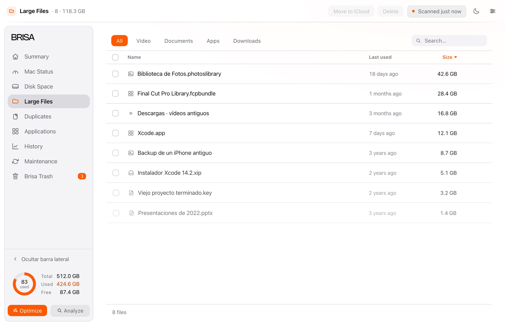
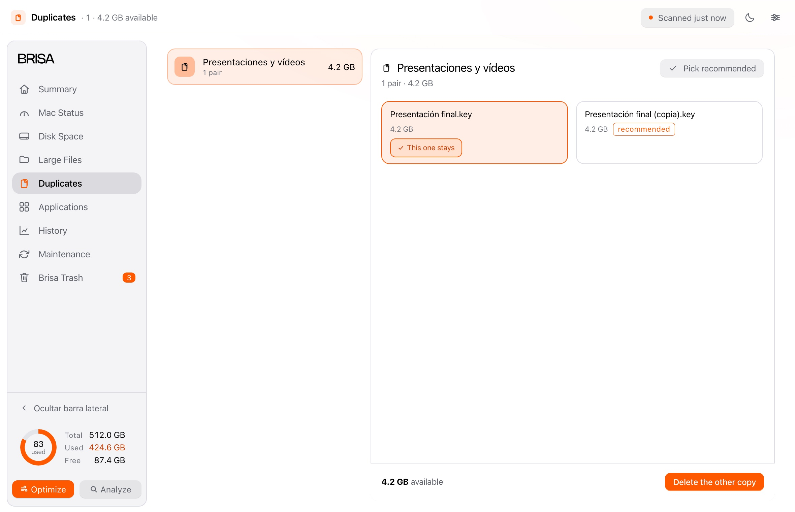
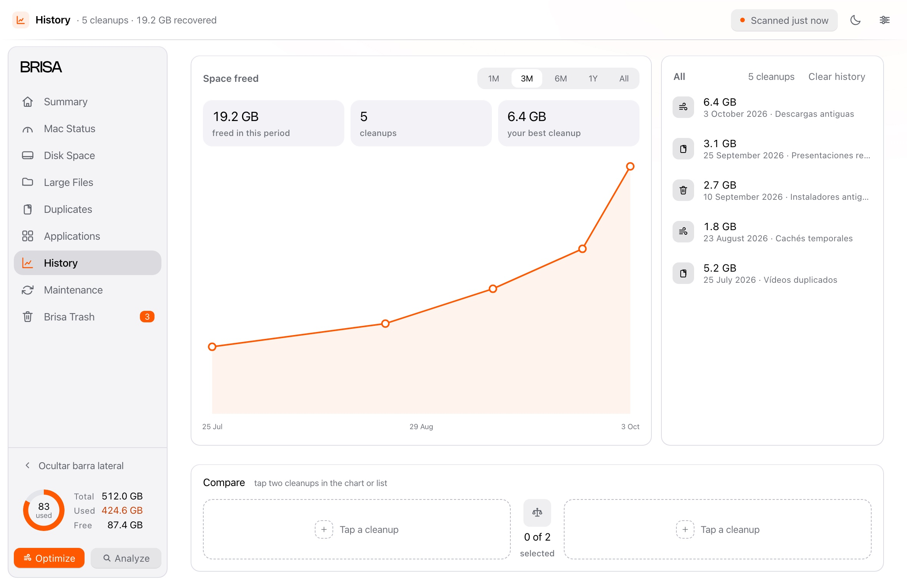

Summary
Your Mac’s report: free space, disk health and what can be recovered. The cleanup starts here.
One for each job. None of them does two things at once.
Your Mac’s report: free space, disk health and what can be recovered. The cleanup starts here.

CPU, memory, disk, network, battery and temperature, live. Pause it and see what is using them.

The disk map by category, folder and age. Click a colour and see what is inside.

The heaviest files in a table, with their last use. Move them to iCloud or delete them without leaving the list.

Copies and near-twins, grouped. Brisa picks which one to keep and explains why.

The app and whatever it left across the system, by category. macOS apps stay out.

Every cleanup, what it freed and when. Compare two rounds, and clear the log without touching the Trash.

It does one thing: it empties its Trash once what you removed reaches the window you chose. And it tells you how much it freed.

Everything removed, with its expiry date and its size. Kept for as long as you choose.

Download it and see how much space comes back.